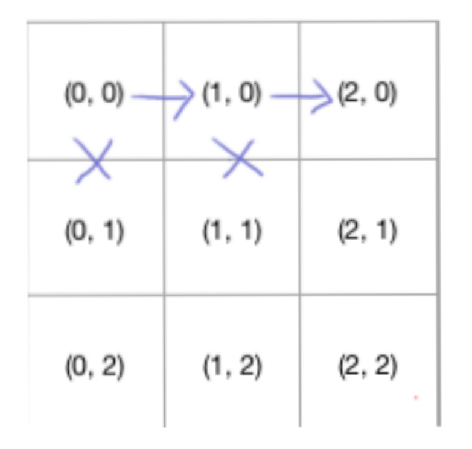

算法是一种艺术，给人感觉很不好接近，但是一旦你和ta熟络了，你就能发现这门艺术的内在是多么美妙且多变。
对于前端来说，算法也许不是最重要的，在日常工作中，几乎很少用到。所以很多人也不是很感冒。
不过呢，有句话这么说的：面试造火箭，上班拧螺丝。咱们得先学习造火箭，才能有拧螺丝的机会。
莫得办法，既然想要拧螺丝，就要有好活的老学到老的觉悟。否则连改锥都没了。
那么，看题。
给你一个表格，像这样的:
从 (0, 0) 到 (M, N)移动，并假设，每次只能向下或者向右移动一步，那么，请问一共有多少种不同的路径。
乍一看，好像可以遍历，依次向下或者向右找 (i + 1, j) 或者 (i, j + 1)， 直至 (N, M)
比如下面这个简单版本：
有六种路径：
整理一下，相当于：
从(0, 0)开始，因为我们只能向下或者向右，所以我们先选择一条路去走，比如向右，这时候我们就走到了(1, 0)
打叉的部分不代表不能走，只是代表当前流程下，我们只能选其一，也就是右
然后我们在(1, 0)，继续走，可以向右或者向下，我们依然选择向右，这时候我们走到了(2, 0)

然后再往下走，直至走到(N, M)，
然后(1, 0)，选择另外一条路，因为这仅仅是个 3*3 的表格，所以我们只能向下
然后继续选择一个方向走直至(M, N)。
如此往复。
这样的话，其实可以转换成一个递归，也就是从(i, j) => (i + 1, j) | (i, j + 1)，然后从(i + 1, j) => (x, y) 这样的一个递归方程式，不过这样性能是很差的，而且表格一旦规模变大，就会爆栈。
那么，我们如何有效的解决这个问题呢？
动态规划
ok，我们再次观察这个表格，我们其实会发现一个规律，就是套娃。
没错，表格把表格套娃了。
这样一来，参考俄罗斯套娃，每个娃娃其实都是一样的，也就是本质一样，只不过体量逐渐变大，并且最小的那个娃娃不能继续套娃，也就是最小的那个娃娃就是起点。
如此一来，我们姑且可以用俄罗斯套娃来翻译一下这套题。
问：N个俄罗斯套娃合体后的总重量是多少？
答：由于最小的一个套娃无法继续套，并且可以得知这个套娃的重量，所以：
有二个套娃的时候，重量是最小的加上第二个
有三个套娃的时候，重量是两个套娃的重量的加上第三个
有四个套娃的时候，重量是三个套娃的重量的加上第四个
.
.
.
.
有N个套娃的时候，重量是(N - 1)个套娃的重量加上第N个
由此，我们可以得到一个式子：
dp(i) = dp(i - 1) + dp(i)
有没有感觉和表格题有些许类似？
我们可以任意 N * M 的右下角作为结束点，每一个都是一个套娃的角色，可能在当前环中是大套娃，但是到了下一环就成了小套娃，所以这个表格其实就是升级版的套娃。
聪明的你，是不是发现了这个升级点在哪？没错，就是一次从(1, 1)开始，每次都是套两个娃，也就是理当前结束点最近的两个娃 => (1, 0) 和 (0, 1)
这样一来我们的公式自然而然就出来了，就是：
dp(N, M) = dp(N - 1, M) + dp(N, M - 1)
七点就是当N或者M为0的时候，也就是这个表格为一条直线，所以总路径都是1
这样我们的代码也就很容易写出来了，并且效率提升，不会有爆栈的问题，还做了之前的缓存。
function taowa(table) {
for (let yLen = table.length, y = yLen - 1; y >= 0; y--) {
for (
let xLen = table[0].length, x = xLen - 1;
x >= 0;
x--
) {
if (x == xLen - 1 || y == yLen - 1) {
table[y][x] = 1;
} else {
table[y][x] = table[y + 1][x] + table[y][x + 1];
}
}
}
return table[y][x];
}举个例子： 4 * 5的表格有多少种路径？
答： 35种
后续看到这，聪明的你会觉得，这个也太简单了吧，没错，算法就是这样。
难者不会，会者不难。
然后如果稍稍加点改造，可能又会花很长时间去这种类似套娃的规律，因为每种套娃的方式都不一样。
比如，还是这样表格，不求不同所有路径数量，将每个cell换成一个数字，求左上角到右下角的经过路径的路径内数字相加的最小值。也就是求最优解。
如下图：
这道题的代码是什么呢？初学动态规划的朋友们可以一起讨论讨论
最后，简单总结下。
问题总是变幻莫测，只要你能找到其中的规律，一定能找到对应的解法。
对于动态规划这类问题，有几个特点：